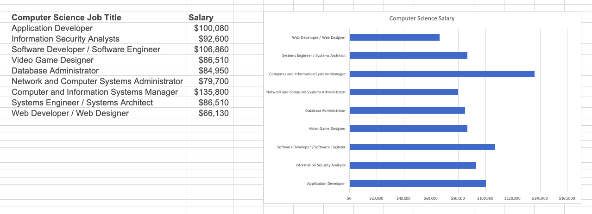
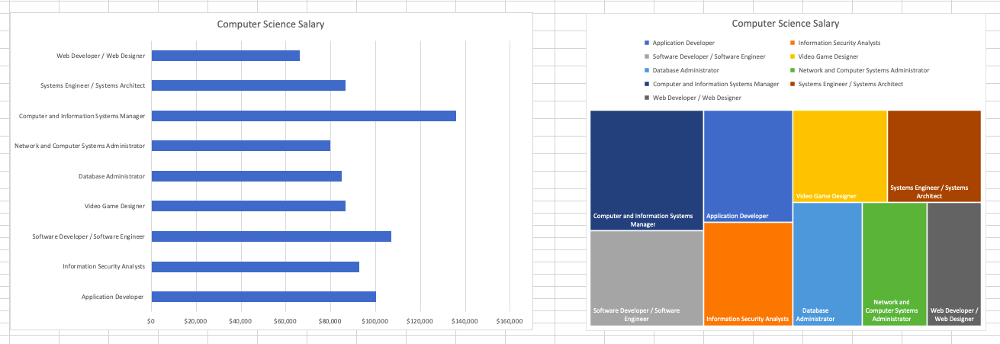

Questions on Visualization
1. Why is visualization effective?
- Most people grasp the truth of an assessment only when they unequivocally envision the evidence for it.
- The example provides data of computer science
job salaries. Comparing the table on the left and the chart on the right, you will find that
visualization can help us read data more quickly and more clearly.

2. What are the more effective ways to encode data for perceptual tasks?
- The more effective way to encode data for perceptual tasks is to construct the chart based
on elementary tasks "as high in the hierarchy as possible".
- The chart on the left (high in the hierarchy) enables accurate estimate,
while the chart on the rigth (low in the hierarchy) enable general estimate.

3. What are trade-offs that Cairo asks us to consider when building a visualization?
- The tradeoff between showing the big picture and the details.
- The tradeoff between clarity and visual appeal.